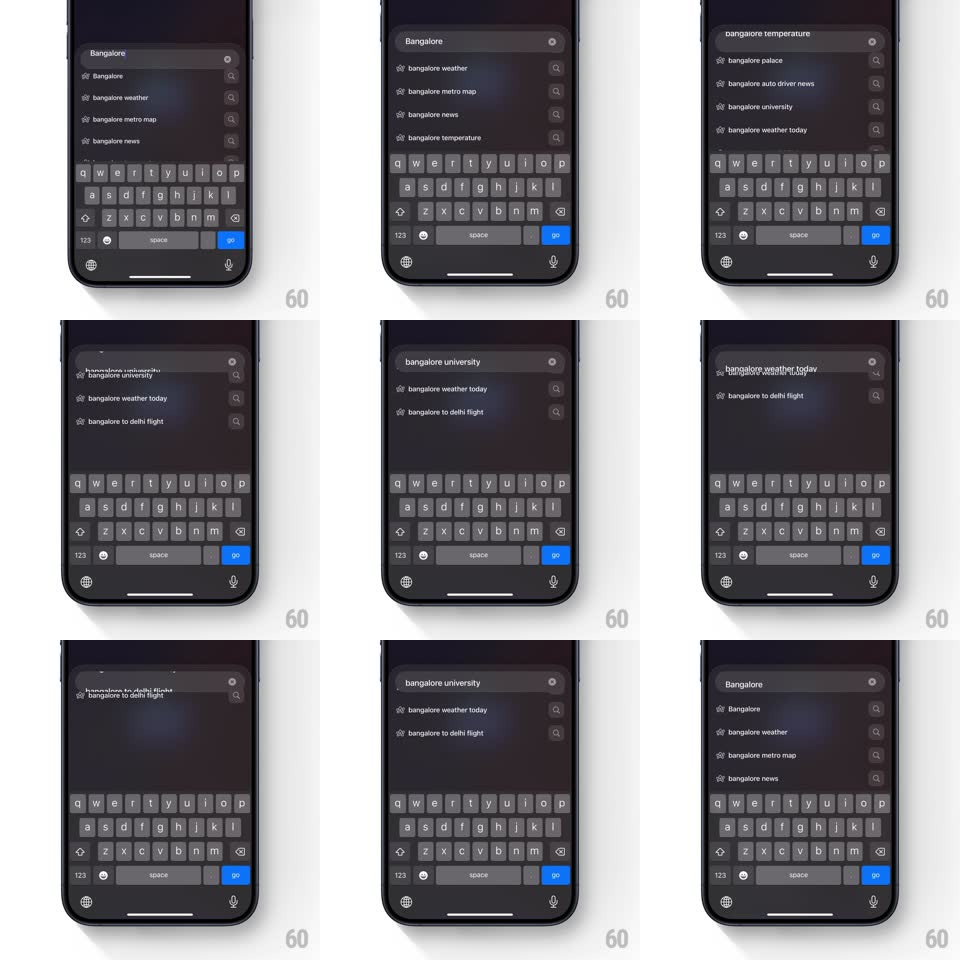

Media
Frame-by-frame

Rebuild this interaction 1:1: Arc Search's scroll-to-morph suggestions - typing a query lists autocomplete rows; scrolling the list morphs the text inside the search field itself to match the highlighted suggestion, letter by letter.

Rebuild this interaction 1:1: Arc Search's scroll-to-morph suggestions - typing a query lists autocomplete rows; scrolling the list morphs the text inside the search field itself to match the highlighted suggestion, letter by letter.
## Integration
Integration: stack-agnostic spec - springs given as stiffness/damping, timed motions as duration + curve; map every value to your framework and animation library of choice.
## Scene
Dark search screen, keyboard up: rounded search field pinned top ("Bangalore", clear X), suggestion rows below with small arrow icons (Bangalore / bangalore weather / bangalore metro map / bangalore news / bangalore university / bangalore to delhi flight...).
## Motion spec
Pattern: scroll-driven field morphing.
- Scroll the suggestion list: rows move under a fixed highlight zone; whichever row crosses it pushes its text up into the search field.
- The field text morphs, not swaps: characters shared with the current query stay put while extra characters type in sequentially (~25ms per char) and removed characters delete in reverse - "Bangalore" -> "bangalore weather" grows tail characters as the row approaches the highlight.
- The highlighted row lifts to full white; others dim (~50%); the row's arrow icon nudges left 4px when highlighted.
- The morph overshoots slightly on fast scrolls and catches up - it chases the scroll (spring ~380/26 on the text commit).
- Release settles on one suggestion: the field commits its text, the X clears back to the typed query with the same character-by-character delete.
## Calibration
- The keyboard never dismisses while scrolling; the field keeps focus styling.
- Typed query casing ("Bangalore") is preserved until a suggestion overwrites it.
## Reduced motion
Field text swaps with a 150ms crossfade instead of character morphing.
## Don't miss
- The field morphs while scrolling - the user never taps a row to preview it.
- Suggestions show lowercase except the typed query - the morph visibly changes case.